<div class="toolbar" role="banner">
  <button mat-button [matMenuTriggerFor]="belowMenu" style="margin-left:20px"><mat-icon>more_vert</mat-icon></button>
  <mat-menu #belowMenu="matMenu" yPosition="below">
    <button mat-menu-item [routerLink]="['/group_list']">Write Review</button>
    <button mat-menu-item [routerLink]="['/review']">Scoreboard</button>
    <button mat-menu-item [routerLink]="['/discussion']">Discussion</button>
  </mat-menu>

  <span>Peer Review</span>
  <div class="spacer"></div>
  
</div>
<router-outlet></router-outlet>